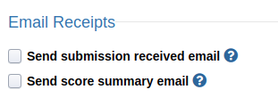

Submission Email Receipts¶
Submission email receipts can be enabled on the project admin page under the “Settings” tab. Scroll down towards the bottom of the page to find the section labelled “Email Receipts.”
When “Send submission received email” is checked, students will receive an email as soon as the submission is recorded in the database.
When “Send score summary email” is checked, students will receive an email once all non-deferred tests are finished grading. The email will contain a summary of their score for that submission (for non-deferred tests only). The summary uses the “Normal” feedback category unless the submission is past the daily limit, in which case it uses the “Past limit” feedback category. In other words students will see no more information than they would by going to the “My Submissions” tab of the project page and viewing the submission there.
These options are independent of each other. You can select either, both, or neither of them.
Verifying Submission Emails with the Verification Link¶
Submission emails contain a URL that, when visited, verifies the GPG signature of the email contents.


Verifying Submission Email Receipts Manually¶
IMPORTANT: There are several steps you must follow to make sure that you have the original, unencoded email content. Copy-pasting from your email client WILL NOT WORK.
Submission email receipts can be cryptographically verified manually using GPG.
First, save the MIME-encoded plaintext content of the email to a file, say
message.txt.quoted. In Gmail this can be accessed by clicking
“Show original” in the overflow menu. Save the contents starting with
-----BEGIN PGP SIGNED MESSAGE----- and
ending with -----END PGP SIGNATURE-----
-----BEGIN PGP SIGNED MESSAGE-----
Hash: SHA512
This email contains a summary of your score for
all non-deferred test cases on the submission from jameslp@umich.edu
at 2020-08-25 14:19:12.028297+00:00 UTC for jameslp-test Send Emails.
The submission's database ID is 760901.
Please visit autograder.io/web/project/757?current_tab=3Dmy_submissions
to view all available details on these results.
Suite 1:
=09Test 1: 1/1
Total: 1/1
-----BEGIN PGP SIGNATURE-----
iQEzBAEBCgAdFiEEz9QEQv6o93rm9kENmpgnFC2y9b8FAl9FHecACgkQmpgnFC2y
9b/XlwgAhnh5NIlxZan2lIyiRTRgbvN3GbdjkwruGmEZ57nwo2oqWXDe3eQayVoq
RxmC8nuBnxJUs2nWlkA3kkd5eMmw8dBB63k8B5w0nuFfP+idmmWIK5I7YkFLrlII
rJhSE2kMdI321QTJ/nqi3xuHTzaQ6L3NNTfKR+XMsGCBG1VzGodi1K5q/eKjw1ci
zF1r0Taf5oMCfJQxOpAu84ntNdeC+7yKRcQVXUGEoYDADf/TdUjq6lRbyu2118DC
A9xMrXE3yjGLJpYKB0JPHOwahSxnnhRXho/tJphlZyaW8TI7mKka3yvF/gVWQ2qo
sx4xOE+valgXhEP3kfLtf7YrESeXoQ=3D=3D
=3DfClI
-----END PGP SIGNATURE-----
Next, decode the message from MIME-quoted into plaintext. The code below uses Python 3.
from quopri import decode
with open('message.txt.quoted') as f, open('message.txt.asc', 'wb') as out:
decode(f, out)
Next, download and import Autograder.io’s public key. If you’re using
a custom deployment of Autograder.io, replace autograder.io with your domain
in the url below:
$ curl -sSL https://autograder.io/api/gpg_public_key/ | gpg --import -
Finally, verify the sender authenticity of the signed message:
$ gpg --always-trust --verify message.txt.asc
gpg: Signature made Tue 11 Aug 2020 01:47:45 PM EDT
gpg: using RSA key FCA94A6967A5FA37FA6AF1CF68616968A865B2E3
gpg: Good signature from "Autogenerated Key <admin@autograder.io>" [unknown]
gpg: WARNING: Using untrusted key!